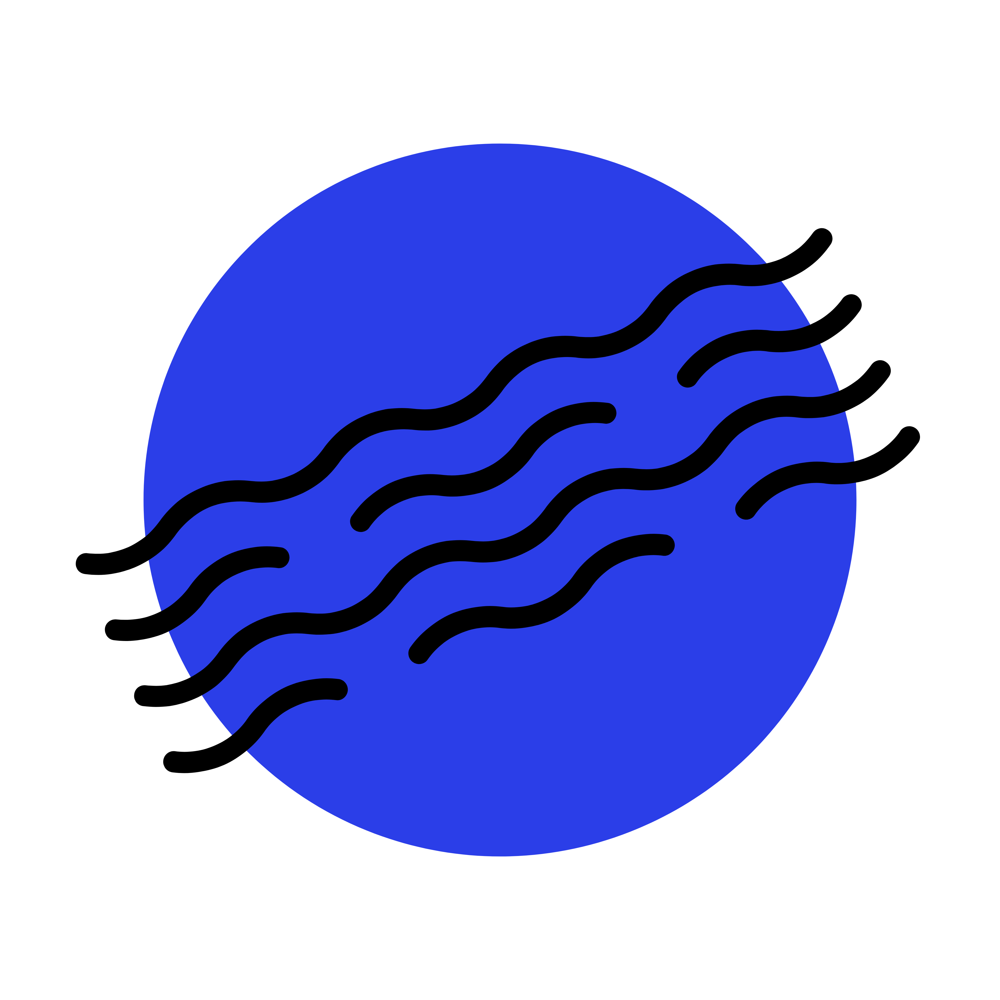

브랜드 아이덴티티 — BRAND IDENTITY
파란수박의
 라인 버전 — 명함·인쇄물
라인 버전 — 명함·인쇄물
파란수박의
색과 모양.
심볼 — Symbol
라인 버전 — 명함·인쇄물
채움 버전 — SNS·파비콘원과 파동선이 겹쳐진 심볼은 우편 소인에서 착안했습니다. 달 뒷면 본부에서 지구로 전파를 쏘는 장면이기도 합니다.
컬러 시스템 — Color System
파아란파랑
#2B3EE8
외계인이 우주에서 지구를 바라볼 때 가장 먼저 눈에 들어오는 색. 바다와 하늘의 빛깔.
새초롬초록
#2DBD6E
수박의 겉껍질. 모두가 진심을 조금씩 숨기고 살아가는 세상의 새초롬함.
속마음분홍
#FC5C7D
수박의 과육. 새초롬한 겉모습 안에 누구나 품고 있는 따뜻한 속마음.